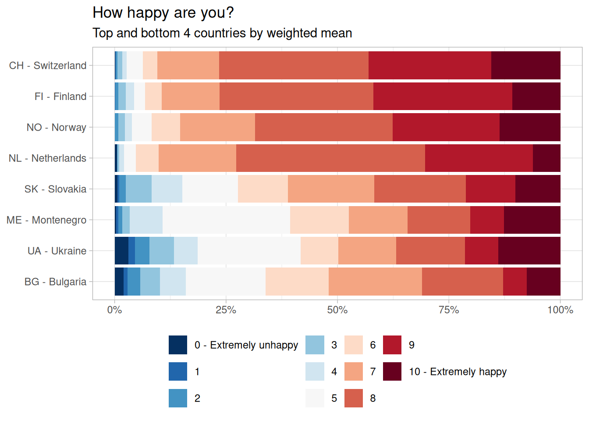
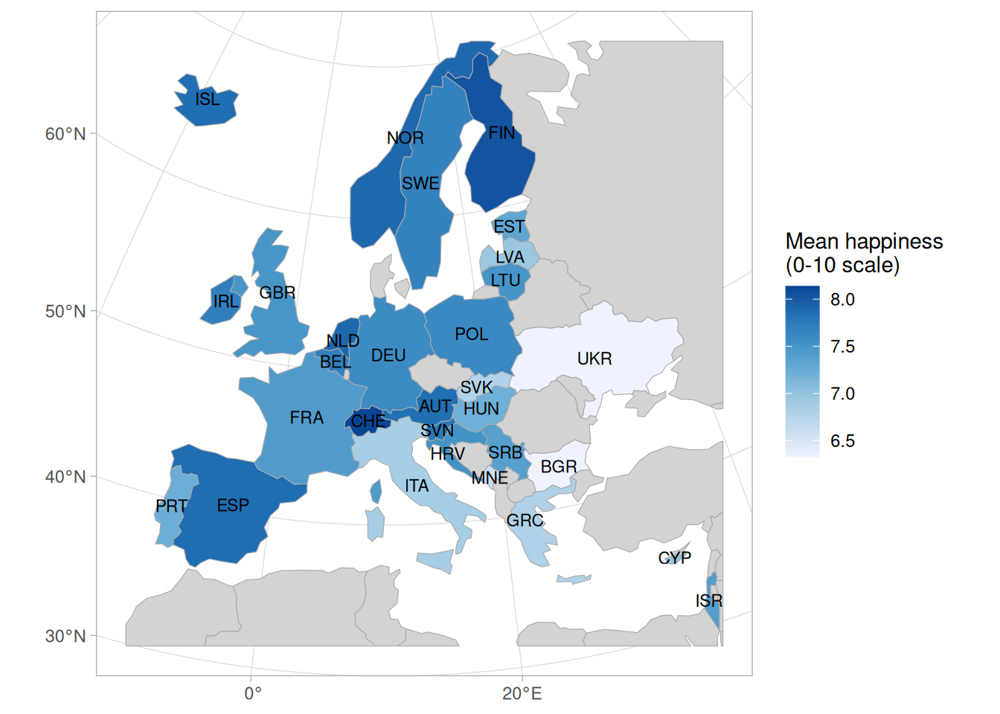

library(tidyverse)
library(srvyr)
library(sf)
library(tmap)
ess_der <- read_rds(here::here("DerivedData", "ess11_der.rds"))Exercise solutions: visualizing survey estimates
Tidy Survey Analysis in R - uRos 2026 Tutorial
Setup
Load the packages and read in the derived ESS data.
Our goal
By the end of these exercises, you will create two charts: a Likert-style stacked bar chart of the weighted distribution of happiness by country, and a map of weighted mean happiness by country.


Exercise 1: create the design object
Use ess_der and {srvyr} to create a survey design object called ess_des. The ESS design variables are:
psu: primary sampling unit (cluster)stratum: stratumanweight: analysis weight
Remember that some psu codes repeat across different stratum values.
Code
ess_des <- ess_der |>
as_survey_design(
ids = psu,
strata = stratum,
weights = anweight,
nest = TRUE
)
ess_desStratified 1 - level Cluster Sampling design (with replacement)
With (24791) clusters.
Called via srvyr
Sampling variables:
- ids: psu
- strata: stratum
- weights: anweight
Data variables:
- cntry (chr), anweight (dbl), nwspol (int), netusoft (int), netustm (int),
volunfp (int), happy (int), wrhpp (int), agegroup (int), pdwrk (int), edctn
(int), uempla (int), uempli (int), dsbld (int), rtrd (int), cmsrv (int),
hswrk (int), dngoth (int), dngref (int), dngdk (int), dngna (int), stratum
(int), psu (int), pdwrk_rec (int), edctn_rec (int), uempla_rec (int),
uempli_rec (int), dsbld_rec (int), rtrd_rec (int), cmsrv_rec (int),
hswrk_rec (int), dngoth_rec (int), Retired (lgl), wt1 (dbl), Happy_Freq
(int), Happy (int), News (int), Country (chr), Volunteer_12 (int),
Volunteer_01 (dbl), Volunteer_Factor (fct), NetUsage (dbl), NetFreq (fct),
AgeGroup (fct)nest = TRUEtells {srvyr} thatpsucodes are only unique withinstratum, so the same code in two strata is treated as two different clusters
Exercise 2: estimate weighted mean happiness by country
Happyis the ESShappyitem (0 = extremely unhappy, 10 = extremely happy)- Refusal/don’t know/no answer codes already recoded to
NA
Use ess_des to estimate weighted mean happiness by country. Save the result as happy_by_country.
Code
happy_by_country <-
ess_des |>
filter(!is.na(Happy)) |>
group_by(Country) |>
summarize(Happy_mean = survey_mean(Happy, na.rm = TRUE))
happy_by_country# A tibble: 30 × 3
Country Happy_mean Happy_mean_se
<chr> <dbl> <dbl>
1 Austria 7.85 0.0494
2 Belgium 7.70 0.0464
3 Bulgaria 6.33 0.0549
4 Croatia 7.53 0.0569
5 Cyprus 6.99 0.0888
6 Estonia 7.31 0.0535
7 Finland 8.04 0.0427
8 France 7.43 0.0445
9 Germany 7.59 0.0675
10 Greece 6.80 0.0369
# ℹ 20 more rowsExercise 3: calculate distribution of happiness level by country
Calculate the weighted count (n) and proportion (p) of each happiness level (0-10) within each country. Convert Happy to a factor with levels 0:10, labeling 0 as “0 - Extremely unhappy” and 10 as “10 - Extremely happy”. Keep both cntry and Country as grouping variables. Save the result as happy_dist_country.
Hint: use interact(cntry, Country) in group_by() so proportions are calculated within each country.
Code
happy_dist_country <-
ess_des |>
filter(!is.na(Happy)) |>
mutate(
Happy_factor = factor(
Happy,
levels = 0:10,
labels = c(
"0 - Extremely unhappy", 1:9, "10 - Extremely happy"
)
)
) |>
group_by(interact(cntry, Country), Happy_factor) |>
summarize(
n = survey_total(vartype = NULL),
p = survey_mean(vartype = NULL)
) |>
ungroup()
happy_dist_country# A tibble: 327 × 5
cntry Country Happy_factor n p
<chr> <chr> <fct> <dbl> <dbl>
1 AT Austria 0 - Extremely unhappy 2.90 0.00374
2 AT Austria 1 1.99 0.00256
3 AT Austria 2 3.83 0.00493
4 AT Austria 3 10.9 0.0141
5 AT Austria 4 8.62 0.0111
6 AT Austria 5 43.5 0.0560
7 AT Austria 6 43.2 0.0556
8 AT Austria 7 125. 0.161
9 AT Austria 8 251. 0.323
10 AT Austria 9 198. 0.255
# ℹ 317 more rowssurvey_total(vartype = NULL)gives a weighted count perCountryxHappy_factorcell without standard errors, which is all that’s needed here since the plot shows a descriptive distribution, not an inferential estimateinteract(cntry, Country)treats the two country variables as a single grouping variable, sosurvey_mean()returns proportions ofHappy_factorwithin each country
Exercise 4: identify the happiest and least happy countries
To keep the chart readable, identify the top and bottom 4 countries based on mean happiness (8 total, as in the reference chart). Save the country names as a character vector called top_bottom_countries.
Code
n_countries <- 4
top_bottom_countries <-
happy_by_country |>
slice_max(Happy_mean, n = n_countries) |>
bind_rows(
happy_by_country |> slice_min(Happy_mean, n = n_countries)
) |>
pull(Country)
top_bottom_countries[1] "Switzerland" "Finland" "Norway" "Netherlands" "Bulgaria"
[6] "Ukraine" "Montenegro" "Slovakia" slice_max()/slice_min()onhappy_by_countrypick then_countrieshappiest and least happy countries; adjustn_countriesto show more or fewer
Exercise 5: make bar chart with country subset ordered by mean
A Likert-style stacked bar shows the full weighted distribution of raw 0-10 responses within each country. Using happy_dist_country, happy_by_country, and top_bottom_countries, create a stacked bar chart of the response distribution for the selected countries, ordered by mean happiness.
Code
happy_likert <-
happy_dist_country |>
left_join(happy_by_country, by = "Country") |>
filter(Country %in% top_bottom_countries) |>
mutate(Label = fct_reorder(paste(cntry, "-", Country), Happy_mean))
ggplot(happy_likert, aes(y = Label, x = p, fill = Happy_factor)) +
# reverse = TRUE keeps "0 - Extremely unhappy" on the left and
# "10 - Extremely happy" on the right, matching the legend order
geom_col(position = position_fill(reverse = TRUE)) +
scale_fill_brewer(palette = "RdBu", direction = -1, name = NULL) +
scale_x_continuous(labels = scales::percent) +
labs(
title = "How happy are you?",
subtitle = glue::glue("Top and bottom {n_countries} countries by weighted mean"),
x = NULL,
y = NULL
) +
theme_light() +
theme(legend.position = "bottom")
fct_reorder()sorts the remaining countries byHappy_meanso the happiest lands at the top of the plot, matching the ordering convention from the reference chartscale_fill_brewer(palette = "RdBu", direction = -1)gives a diverging blue-to-red palette across the 11 response categoriesposition_fill(reverse = TRUE)is needed becausegeom_col()’s default stacking order would otherwise put “0 - Extremely unhappy” on the right
Exercise 6: join country shapes to mean estimates
- Country is a natural domain for ESS analysis
- Choropleth maps make cross-country patterns easier to spot than a table
Get a base map from {tmap} using the object World and join the mean estimates from happy_by_country on. Crop the map to the extent of ESS using this code:
dat_sf |>
st_crop(
st_bbox(c(xmin = -10, ymin = 32, xmax = 36, ymax = 70), crs = 4326) |>
st_transform(3035)
)Save the result as happy_shape.
Code
happy_shape <-
World |>
full_join(happy_by_country, by = c("name" = "Country")) |>
st_transform(3035) |>
st_crop(
st_bbox(c(xmin = -10, ymin = 32, xmax = 36, ymax = 70), crs = 4326) |>
st_transform(3035)
)Warning: attribute variables are assumed to be spatially constant throughout
all geometriesExercise 7: map colored by Happy
Using happy_shape, create a map with each country filled by its weighted mean happiness.
Code
happy_shape |>
ggplot() +
geom_sf(aes(fill = Happy_mean), color = "darkgrey") +
geom_sf_text(
data = happy_shape |> filter(!is.na(Happy_mean)),
aes(label = iso_a3),
size = 3
) +
scale_fill_distiller(
palette = "Blues",
direction = 1,
na.value = "lightgrey",
name = "Mean happiness\n(0-10 scale)"
) +
labs(x = NULL, y = NULL) +
theme_light()
geom_sf()draws the polygons in the data’s CRS (EPSG:3035 from Exercise 5) and adds lon/lat graticules automaticallyscale_fill_distiller()gives a continuous Brewer scale becauseHappy_meanis a continuous estimate, not a category;direction = 1makes higher happiness darker- Countries without an ESS estimate have
NAforHappy_meanafter thefull_join, sona.value = "lightgrey"shades them grey - Only countries with an estimate are labelled, via
data = ... filter(!is.na(Happy_mean))ingeom_sf_text() - Labels use
iso_a3(from theWorldshapefile) rather than ESS’s own 2-lettercntrycodes, since the two don’t share a common code column after the join